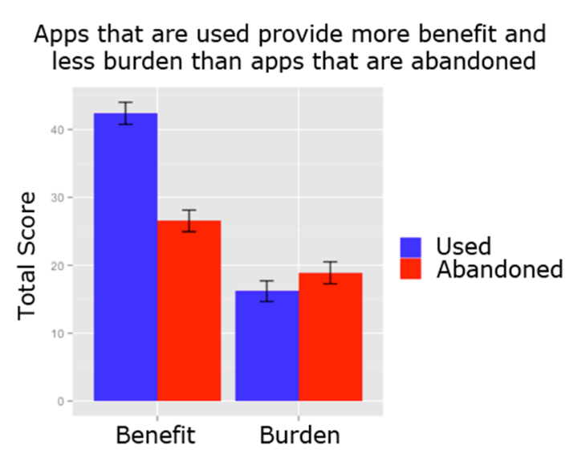
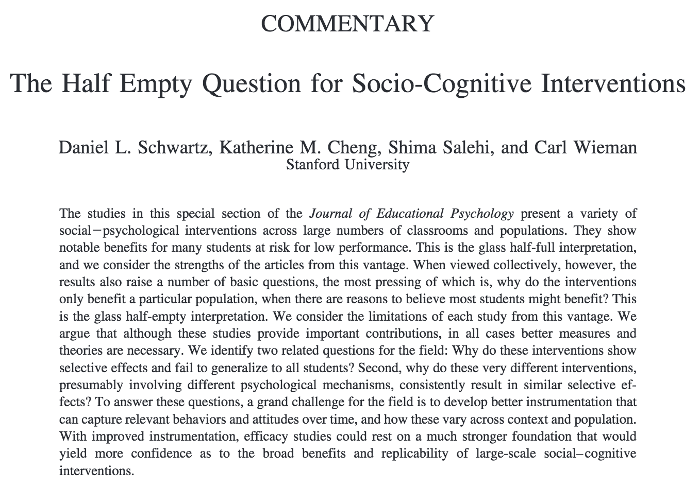
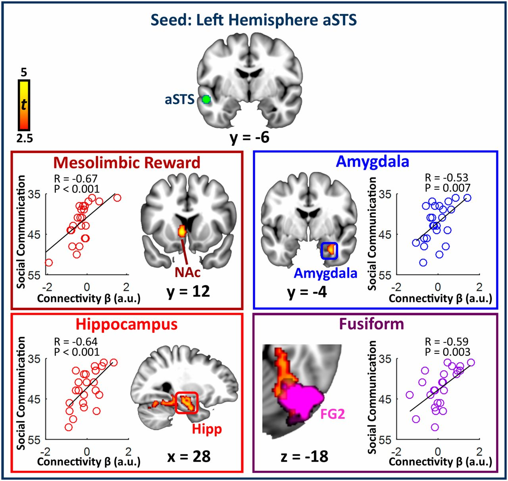
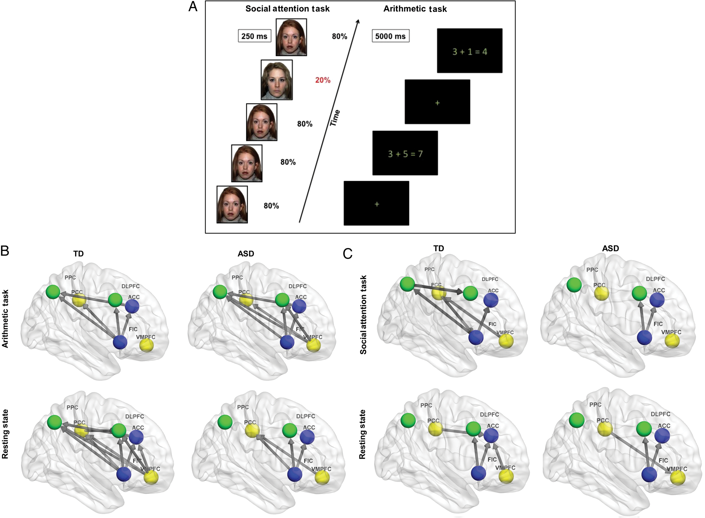
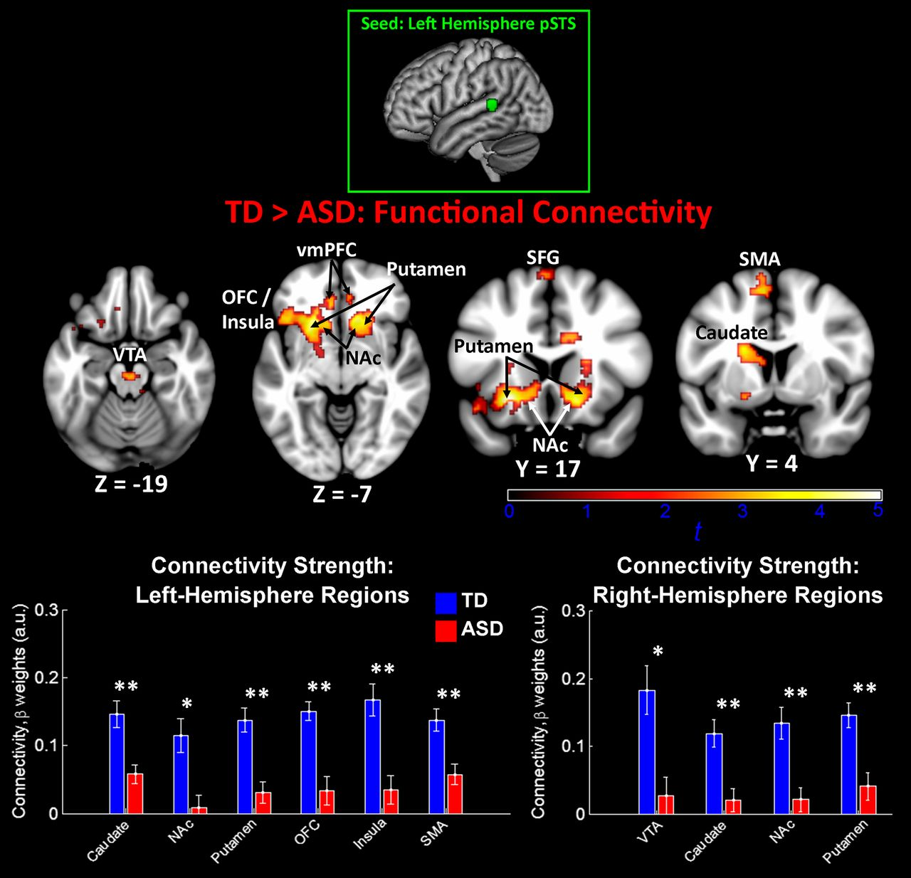

I'm Katie Cheng, a PhD student in the Graduate School of Education at Stanford University, with a specialization in Learning Sciences, Technology, Design, and Psychology. I am a member of the AAALab, which brings together cognitive science and classroom experience to create pedagogy, technology, and assessments that prepare students to adapt and learn. My advisor is Daniel Schwartz.
In my research, I seek to understand the knowledge, strategies, and mindsets that are necessary for effective learning. On the basis of this understanding, I am designing technologies to empower learners. Throughout this work, I strive to keep at the fore an equity lens, particularly keeping in mind historically marginalized or under-served groups.
I received an MSc in Computer Science from Stanford University, with a specialization in Human Computer Interaction, and a BA in Cognitive Science from UC Berkeley.
Current Research
Proof of Utility
Strategic Resource Use
Learning Tasks and Subtasks
Publications

Katherine M. Cheng, Veronica J. Lin, Kush Nijhawan, Ashley Westhem, and Michael S. Bernstein
ACM Human Factors in Computing Systems (CHI), May 2017

Daniel L. Schwartz, Katherine M. Cheng, Shima Salehi, and Carl Wieman
Journal of Educational Psychology, 2016

Daniel A. Abrams, Tianwen Chen, Paola Odriozola, Katherine M. Cheng, Amanda E. BAker, Aarthi Padmanabhan, Srikanth Ryali, John Kochalka, Carl Feinstein, and Vinod Menon
Proceedings of the National Academy of Sciences, 2016

Lucina Q. Uddin, Kaustubh Supekar, Charles J. Lynch, Katherine M. Cheng, Paola Odriozola, Maria E. Barth, Jennifer Phillips, Carl Feinstein, Daniel A. Abrams, and Vinod Menon
Cerebral cortex, 2014

Daniel A. Abrams, Charles J. Lynch, Katherine M. Cheng, Jennifer Phillips, Kaustubh Supekar, Srikanth Ryali, Lucina Q. Uddin, and Vinod Menon
Proceedings of the National Academy of Sciences, 2013
Teaching & Mentorship
DAPS Seminar
SPLASH
Learning how to learn: Concrete learning strategies from research on learning and cognition
You've been in school most of your life...but has anyone taught you the most effective strategies for how to learn? Come to this interactive workshop, and learn how to learn! We'll pull from research in education, psychology, cognitive science, and behavioral economics, and teach you strategies for all aspects of learning: staying motivated, memorizing information, understanding tough concepts, staying focused, managing your time and resources, and more! These skills take time and practice, so come check out this intro to learning how to learn, and get ready to implement some of these ideas in your own lives!
Learning across the lifespan: How human cognition develops in context
Is a chimp smarter than a 3 year old? What does cognitive neuroscience tell us about how to teach and learn math? Can I improve my memory? When will I hit cognitive decline? This class hits some of the highlights of what is currently known about developmental psychology and learning. We'll discuss how we can apply this knowledge to improving education. After this course, you'll have a better picture of how human cognition grows and changes across the lifespan, in response to contextual factors in individuals' local and global environment.
Finding Passion
How do we find passion? We all know what sorts of things we like and dislike. But how do we turn these likes and dislikes into a meaningful, actionable future? In this workshop, we'll start by talking about our hobbies and the things we enjoy, and try to gain some insight into what motivates us. Next, we'll think about how we might connect these motivations to a purpose: How might we take the things we enjoy and apply them to a meaningful pursuit? We don't expect that everyone in this workshop will discover their true passions right away! Our goal in this class session is to get the wheels turning, and to help you think through these important questions on your own. Remember, choosing something to be passionate about is not a life-long commitment, it's a decision that you will revisit time and time again.
Pop-out classes
GSE Mentor
Service
DAPS Search Committee
DAPS Student Representative
Guild Community Chair